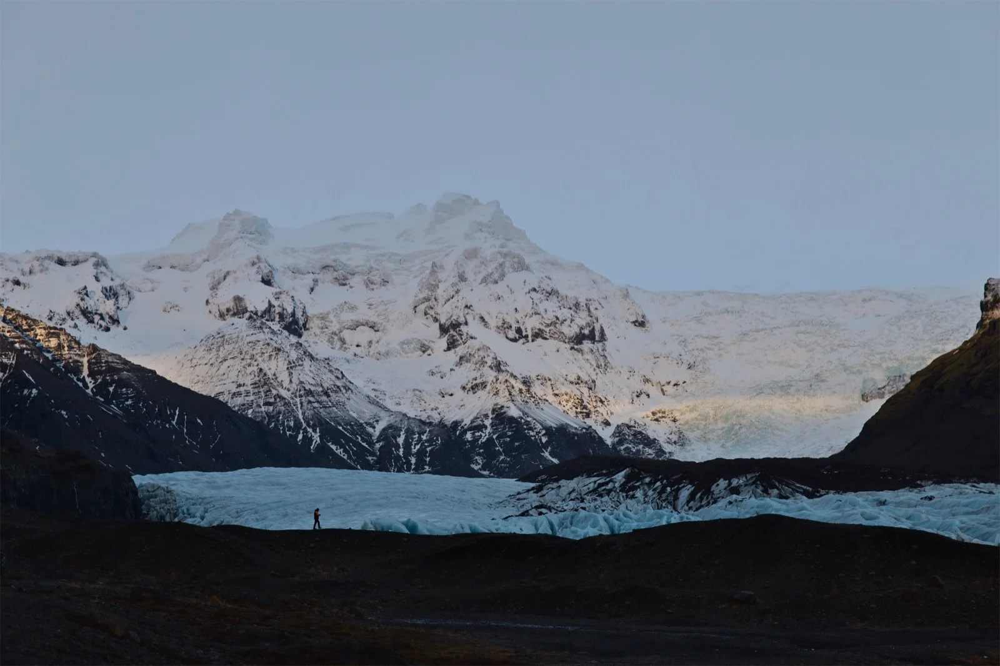
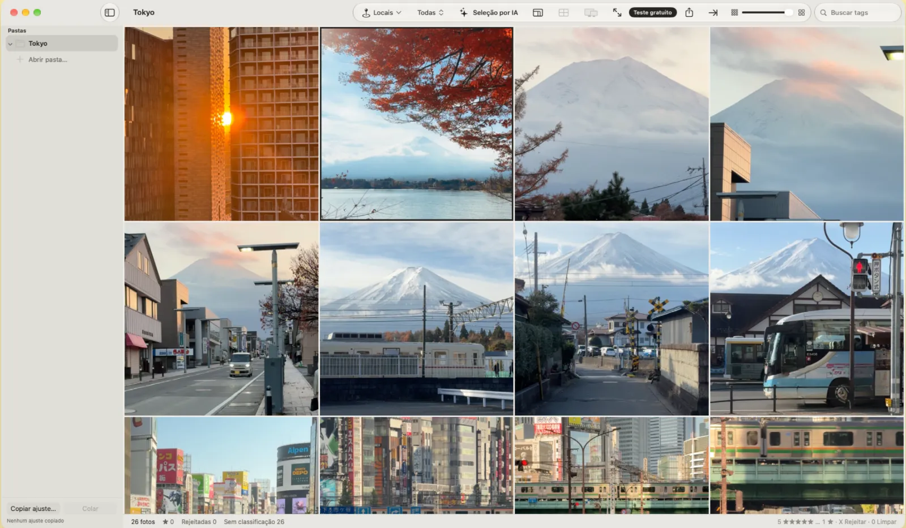
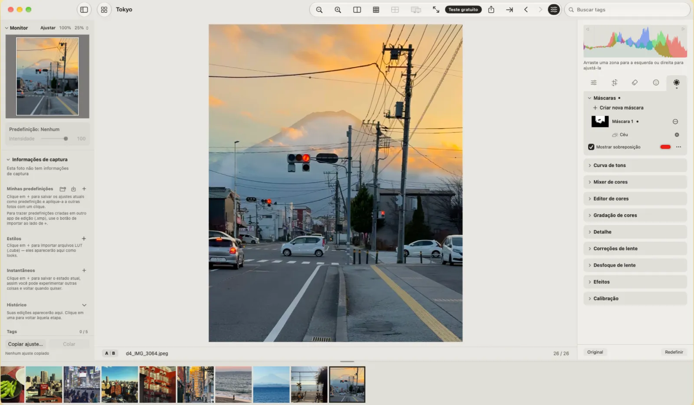
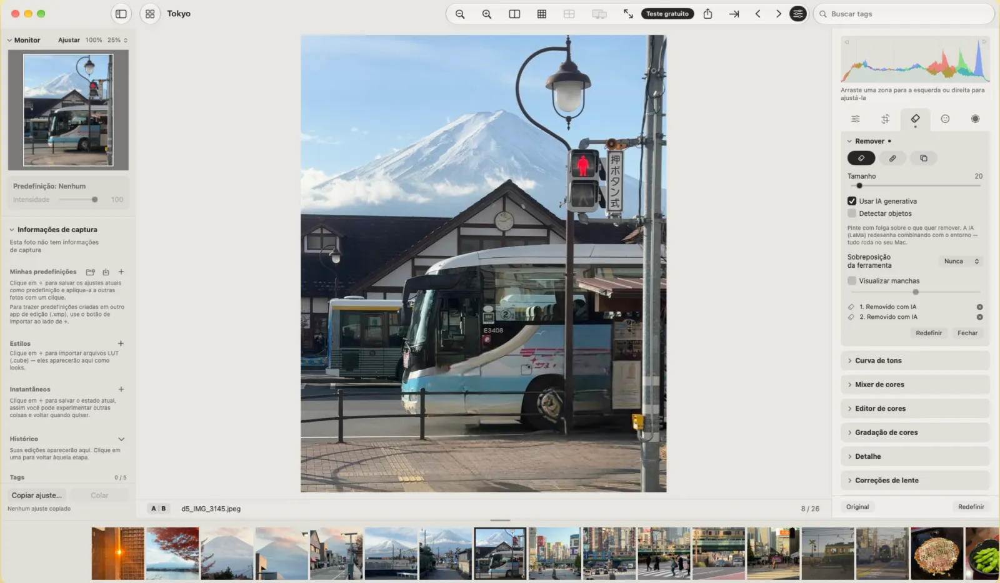

Sem importação. Só as suas pastas.
Abra uma pasta de um cartão SD ou SSD externo e suas fotos aparecem na hora. Sem catálogo nem banco de dados: as edições ficam em arquivos XMP ao lado das fotos, e os originais continuam intactos.
Abra uma pasta e comece na hora: veja, selecione e revele sem importar. Suas fotos nunca saem do seu Mac ou PC com Windows, e toda a IA roda no próprio dispositivo.
Download gratuito, com 30 dias de teste grátis de todos os recursos. Requer macOS 26 ou posterior. Windows 10 (64 bits) ou posterior.
Se o Windows mostrar “O Windows protegeu o computador”, clique em “Mais informações” → “Executar assim mesmo”.

RAW ajustado para a sua câmera — Perfis ajustados para mais de 130 câmeras. Exposição, curva de tons, gradação de cores — e rápido o bastante para milhares de fotos.
Abra uma pasta de um cartão SD ou SSD externo e suas fotos aparecem na hora. Sem catálogo nem banco de dados: as edições ficam em arquivos XMP ao lado das fotos, e os originais continuam intactos.

Suavize a pele e uniformize o tom sem perder a textura. Modele rosto, mandíbula, olhos, nariz e lábios com controles e remova as manchas de uma pessoa em várias fotos de uma vez.

Selecione o assunto, o céu, o fundo ou as pessoas com um clique e ajuste cada máscara separadamente. Some, subtraia e faça interseções para refinar.

Pinte o que quer tirar e a área é preenchida para combinar com o entorno. Toda a IA roda no dispositivo — suas fotos nunca saem do seu Mac ou PC com Windows.

Ative a conexão com IA e o Claude ou o ChatGPT (Codex) opera o Butter Edit por você: escolher a melhor foto de cada sequência, editar uma foto pelo que você descrever, igualar o tom de uma foto de referência, adicionar máscaras, recortar e exportar — é só pedir.
Recurso da versão comprada diretamente (Mac e Windows). É preciso ter sua própria conta do Claude ou do ChatGPT. Vem desligada; enquanto estiver ligada, pequenas imagens de prévia que a IA examina são enviadas ao serviço de IA conectado.
“Dê 3 estrelas à melhor foto de cada sequência desta pasta”
“Dê a esta foto um visual de filme quente”
“Iguale o tom da foto de referência da minha mesa”
Não há nenhum comando que apague fotos. Os ajustes podem ser desfeitos (⌘Z no Mac, Ctrl+Z no Windows).
O Butter Edit é um editor de fotos sem importação e sem catálogo. Abra uma pasta de um cartão SD ou de um SSD externo e suas fotos aparecem na hora: veja, selecione, revele RAW e edite. Ele foi feito para percorrer milhares de fotos com rapidez.
Não é assinatura. Compre uma vez e use sempre.
Ver, selecionar e editar são sempre gratuitos.
Clique em “Iniciar teste gratuito de 30 dias” para usar todos os recursos por 30 dias. Você nunca é cobrado automaticamente.
Depois do teste, só a exportação fica bloqueada. Uma compra libera para sempre.
Compre fora da App Store e use no Mac e no Windows, em até 3 computadores.
Envie um e-mail com qualquer dúvida ou problema: thefilmtravel@gmail.com
Informe seu computador (modelo do Mac e versão do macOS, ou versão do Windows), o modelo da câmera e o que aconteceu.
O app é gratuito. Clique em “Iniciar teste gratuito de 30 dias” para usar todos os recursos por 30 dias. Depois do teste, ver, selecionar e editar continuam funcionando; exportar exige a compra única de desbloqueio. Você nunca é cobrado automaticamente.
Em um Mac com a mesma Conta Apple, abra Ajustes → Compra e clique em “Restaurar compras”.
Suas fotos originais nunca são alteradas. As edições são salvas em arquivos .xmp ao lado das fotos.
No Mac, o Butter Edit abre arquivos RAW de câmeras compatíveis com o macOS; no Windows, de câmeras compatíveis com seu decodificador RAW integrado (LibRaw). Câmeras novas costumam funcionar após uma atualização do macOS ou do app.
Controle pelo app uma câmera conectada por USB e receba as novas fotos direto na sua pasta. Permita o acesso à câmera na primeira conexão.